AMARI UE Simbox MBS "Macro Base Station" is a UE simulator acting as a 3GPP compliant LTE and 5G NR UE (in NSA or SA mode).
It can simulate up to 1000 UEs sharing the same spectrum with different types of traffic within multiple cells.
It is also supporting NB-IoT and LTE-M.
The offer is completed by an integrated IP simulation package for reproducible test results.
The UE Simbox is a turnkey solution running on Fedora 42 operating system with all software components and license required to emulate 4G/5G UEs. It is available in 2 different versions:
The UE Simbox can be configured and controlled using either configuration files, WebSocket API or via a web based GUI. IP traffic may be reachable with a Linux TUN network interface.
This document describes the first steps to start and configure your Amarisoft Simbox. For advanced configurations and testing, please refer to the application notes and other documents available under extranet.amarisoft.com or under the /root/ue/doc/ folders of your Simbox.
AMARI UE Simbox MBS supports LTE release 8 with features up to release 17. It supports also release 16 EN-DC for 5G NSA mode and release 16 for 5G SA.
In split 8 (RF mode), AMARI UE Simbox MBS can emulate up to :
In split 7.2, AMARI UE Simbox MBS can emulate up to :
|
Split 7.2 is not supported in LTE.
|
Plug the external power cable provided with the Simbox in the AC-in Connector and place the toggle switch located in the rear panel on position "1", then press the Power on button on the top of the front panel to turn the system on.
The led will light up blue once Simbox is powered ON .
Power adapter specifications:
Input: 100~240 V AC, 50~60 Hz
The AMARI UE Simbox MBS setup is delivered with three PCIe Software Defined Radio (SDR) cards supporting 100Mhz MIMO 4x4 each.
Each PCIe SDR card has four RX and four TX SMA connectors plus one GPS connector.
Rx1/Rx2/Rx3/Rx4 are the receive antenna ports.
Tx1/Tx2/Tx3/Tx4 are the transmit antenna ports.
GPS is used for connecting an external GPS clock. See trx_sdr.pdf document for more details.
|
Note: Each physical PCIe SDR card (100Mhz MIMO 4x4) is actually composed of two independent RF chips. Each chip is mapped to a separate logical SDR device and can handle 100MHz 2x2 MIMO as depicted below |
For basic scenarios running just one cell 2X2 MIMO as instance, the UE Simbox will only use one SDR device (#0). In that case, it’s not required to connect all SMA connectors.
For others scenarios such as carrier aggregation, 4x4 MIMO, Multi cells or EN-DC tests, several SDR cards can be used and combined.
In that case, three important points have to be taken into account for connecting the UE Simbox to enb/gnb:
The following section describes how to connect and configure your UE simbox using RF cables.
|
Note: unused ports of the combiners must be terminated with RF terminator or absorber especially when using frequency above 2.5Ghz. Otherwise big insertion losses may happen and downgrade the RF performances. |
In this case one SDR device "SDR0" is used. LTE / 5G SA cell (rf port 0) is mapped to SDR0.
This mapping is configured in ue.cfg configuration file through rf_driver object:
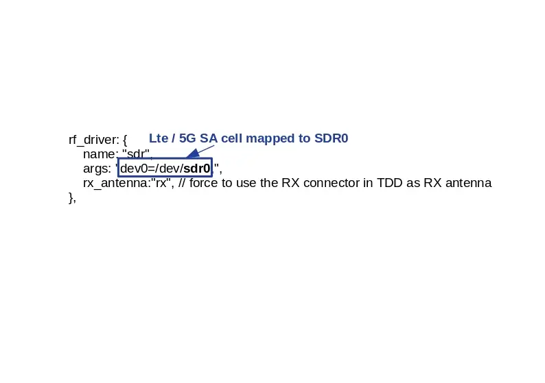
Note: For SISO test, connection between TX2/RX2 and eNB/gNB (TX2/RX2) is not required.
In TDD mode, as both TX and RX are sent on the same channel, only TX1 port is needed for the main antenna and TX2 for the diversity/MIMO antenna.
However, with Amarisoft SDR card, it is possible to force the DL signal reception on RX port and Uplink signal transmission on TX port when rx_antenna: "rx" is set in the RF driver configuration file.
This improves the performance of the SDR card as we don’t have to switch the RF several times per radio frame.
|
When |
In this case two SDR devices "SDR0 + SDR1" are used. LTE / 5G SA cell (rf port 0) is mapped to SDR0 and SDR1.
This mapping is configured in ue.cfg configuration through rf_driver object:
Note: For NR TDD band, set rx_antenna: "rx"
This RF cabling corresponds to an EN-DC scenario with one LTE cell FDD 2x2 MIMO and one NR cell FDD 4x4 MIMO
In this case three SDR devices "SDR0 + SDR2 + SDR3" are used. LTE cell 0 (rf port 0) is mapped to SDR0 and NR cell (rf port 1) is mapped to SDR2 & SDR 3.
This mapping is configured in ue.cfg configuration through rf_driver object:
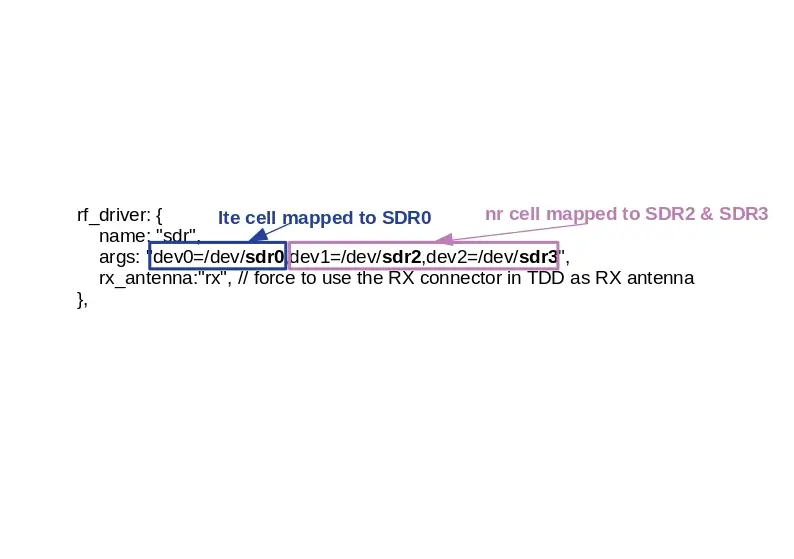
Note: For NR TDD band, set rx_antenna: "rx"
When multiple cells are configured at eNodeB side (four cells in this example), four SDR devices are required at UE simulator side even if cells are intrafreq cells or use the same RF antenna port. Each SDR device is dedicated to one specific cell.
In this case four SDR devices "SDR0 + SDR2 + SDR3 + SDR4" are used. LTE cell 0 (rf port 0) is mapped to SDR0, LTE cell 1 (rf port 1) is mapped to SDR1, LTE cell 2 (rf port 2) is mapped to SDR2 and LTE cell 3 (rf port 3) is mapped to SDR3,
This mapping is configured in ue.cfg configuration through rf_driver object:
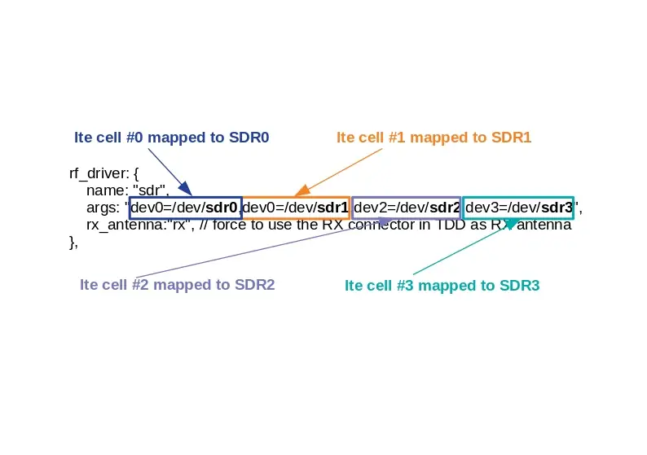
In the picture below, all cells use a different antenna port (RF#1, RF#2, RF#3, RF#4). This cabling is releveant for four neighbor cells or for a Carrier Aggregation test.
In this case six SDR devices "SDR0 + SDR1 + SDR2 + SDR3 + SDR4 + SDR5" are used. Each cell (rf port) is using two SDR devices. First cell (rf port 0) is mapped to SDR0+SDR1, second cell (rf port 1) is mapped to SDR2+SDR3, fird cell (rf port 2) is mapped to SDR4+SDR5.
This mapping is configured in ue.cfg configuration through rf_driver object:

In the picture below, the thress cells use a different antenna port (RF#0, RF#1, RF#3). This cabling is also releveant for multi cells test scenario.
In this case six SDR devices "SDR0 + SDR1 + SDR2 + SDR3 + SDR4 + SDR5" are used. Each cell (rf port) is using two SDR devices. First cell (rf port 0) is mapped to SDR0+SDR1, second cell (rf port 1) is mapped to SDR2+SDR3, fird cell (rf port 2) is mapped to SDR4+SDR5.
This mapping is configured in ue.cfg configuration through rf_driver object: 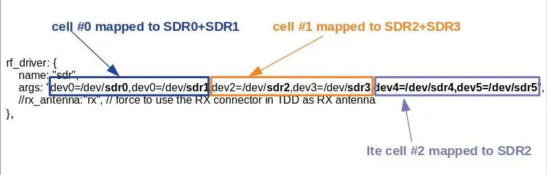
In the picture below, the thress cells use a different antenna port (RF#0, RF#1, RF#3). This cabling is also releveant for multi cells test scenario.
|
When |
The AMARI UE Simbox setup is delivered with an Intel SFP+ 10G Ethernet card in split 7.2 version. It should be connected via fiber cables to the DU and PTP master. In the follwoing image, the AMARI UE Simbox is connected to Amarisoft gNB (DU+CU). The 10G Ethernet interface at the gNB side acts as the PTP master and supports PTP hardware clock. One 10G Ethernet interface is required per 5G cell 100 MHz MIMO 4x4. If the cell bandwidth is less than 100 MHz or if the number of MIMO layers is less than 4, then multiple cells could be mapped to a single 10G interface using VLANs.
More information on 7.2 testing could be found in https://tech-academy.amarisoft.com/FH_7_2_RRH.html.
The AMARI UE Simbox includes built-in graphical card however, for real time performance reasons, it is highly recommended to connect remotely to the simbox by using one of the Ethernet ports.
The AMARI UE Simbox has three Ethernet ports: 1 Gb ethernet port and two 10 Gb ethernet port
The first one (on the top) is configured in DHCP mode and will get automatically an IP address within the range defined on your router. This interface allows you to connect to BMC (login: admin, psw: amarisoft).
The second one is configured with a static IP address 192.168.1.80.
The third one is configured in DHCP mode.
Once you are remotely connected, you can modify the static IP address allocated by editing the file
/etc/sysconfig/network-scripts/ifcfg-enp0s31f6. Thus, future connections to the Simbox can be made using this static address. Note: for Fedora version >= 42 the file to edit is /etc/NetworkManager/system-connections/ifcfg-enp0s31f6.nmconnection.
To login as root, please use root/toor as login / password.
There is also a user account with user/resu as login/password.
Note: The Amarisoft software suit is installed and executed under root account.
The web GUI to display logs is available through web access at the following URL:
http://<IP address>/
To add authentication to the web portal:
Edit /etc/httpd/conf/httpd/conf and look for <Directory "/var/www/html"> section.
Inside it, add AuthConfig to AllowOverride directive so that it becomes AllowOverride None AuthConfig.
Then restart HTTP daemon:
service httpd restart
Create /var/www/html/lte/.htaccess file with following content:
AuthType Basic AuthName "Amarisoft Web GUI" AuthUserFile /etc/httpd/.htpasswd Require valid-user
To add a user and its password, type the following command:
htpasswd -c /etc/httpd/.htpasswd <username>
The UE Simbox is configured to provide an automatic LTE service. At each reboot of the PC, LTE UE service is turned on automatically.
The default config is :
- One LTE cat12 UE configured to camp on LTE cell Band7 (EARFCN 3350) SISO 5mhz bandwitdh.
You can check the LTE service status this way:
service lte status
The command will return "active (running)" status if service is running
You can stop all LTE components this way:
service lte stop
You can start them again this way:
service lte start
You may also prevent them to start at boot time:
systemctl disable lte
NB: lte service remains enable until next reboot
NB2: this command is not available on Ubuntu version <= 14
You may enable service at boot time this way:
systemctl enable lte
NB: lte service remains disable until next reboot
NB2: this command is not available on Ubuntu version <= 14
The default file used by LTE automatic service is ue.cfg (available under /root/ue/config directory).
This files aims to configure the UE simulator parameters such as UE category, EARFCN, IMSI and others.
To change the UE configuration, update this file and restart the LTE service with service lte restart command.
Note: Some examples of configuration file (ue-nbiot.cfg, ue-catm1.cfg) are provided in Amarisoft releases as a starting point.
|
To quickly swap between different configuration, you can stop the automatic service using |
Once configuration file has been selected, frequency and bandwidth must be set to match eNodeB/gNodeB setting as both parameters are static at UE simulator side.
The parameters to be changed are:
When multiple cells are configured at network side, each of them must be declared in cell_groups parameter.
A cell groups references the configuration of 1 or more cells of the same type (LTE, Cat-M1, NB-IoT, or 5G NR). See lteue.pdf for more details
|
Note: Cells within same group must be synchronized at subframe/frame level. |
The example below represents a scenario with 2 cells from two different eNodeB (not synchonized)
cell_groups: [{
group_type: "lte",
multi_ue: true,
cells: [{
rf_port: 0,
bandwidth: 20,
dl_earfcn: 6300,
n_antenna_dl: 1,
n_antenna_ul: 1,
}]
}, {
group_type: "lte",
multi_ue: true,
cells: [{
rf_port: 1,
bandwidth: 20,
dl_earfcn: 3350,
n_antenna_dl: 1,
n_antenna_ul: 1,
}],
}],
The example below represents a scenario with 2 cells from same eNodeB (synchonized)
cell_groups: [{
group_type: "lte",
multi_ue: true,
cells: [{
rf_port: 0,
bandwidth: 20,
dl_earfcn: 6300,
n_antenna_dl: 1,
n_antenna_ul: 1,
},
{
rf_port: 1,
bandwidth: 20,
dl_earfcn: 3350,
n_antenna_dl: 1,
n_antenna_ul: 1,
},
]
}
],
The example below represents a scenario with one LTE and one NR cell
cell_groups: [{
group_type: "lte",
multi_ue: false,
cells: [{
rf_port: 0,
bandwidth: 20,
dl_earfcn: 300,
n_antenna_dl: 1,
n_antenna_ul: 1,
}]
}, {
group_type: "nr",
multi_ue: false,
cells: [{
rf_port: 1,
band: 78,
bandwidth: 20,
dl_nr_arfcn: 632628,
ssb_nr_arfcn: 632256,
subcarrier_spacing: 30,
n_antenna_dl: 1,
n_antenna_ul: 1,
}],
}],
TX and RX gain values must be fine tuned depending on your setup (conducted vs wireless conditions, physical attenuator used, combiner/divider, etc..) as dynamic power control is not handled at UE side (excepted if channel simulation mode is enabled) .
TX and RX gain values are defined in RF configuration file located under /root/ue/config/rf_driver directory. To know which files is used by LTE service, just look at ue.cfg file. Example:
include "rf_driver/config.cfg",
In wired test conditions, it’s recommended to put attenuator between eNodeB and LTE UE simulator in order not to damage SDR cards and avoid saturation.
On UE Simulator side, max SDR input is -10 dBm, max SDR output is 5dBm.
Recommended values for PCIe SDR cards are :
tx_gain: 60.0, /* TX gain (in dB) */ rx_gain: 0.0, /* RX gain (in dB) */
|
Note: If physical attenuators are used, equivalent gain must be added to these default values |
In Wireless test conditions, the recommended values for PCIe SDR cards are :
tx_gain: 90.0, /* TX gain (in dB) */ rx_gain: 60.0, /* RX gain (in dB) */
To activate the simulation of multiple UEs, the parameter multi_ue must be set to true.
The "multiple UE" mode aims to simulate hundreds of devices on the same PC sharing the same physical layer.
As a consequence all UE have the same timing advance and this value must be defined in the ue.cfg file.
There are two ways to define the timing advance for multiple UE.
global_timing_advance=-1. If automatic mode is set, the UE simulator uses the timing advance from the first received RAR for all UEs. This is the default behaviour.
global_timing_advance=x, (x = TA of the uplink relative to the downlink in 1/1.92 us unit)
|
We recommend to use the automatic mode. However, if UEs encounter difficulties to synchronize with eNodeB signal you may have to adjust manually the timing advance. See SIB found but attach fails for more details. |
Once UE configuration is completed, you can restart your service to take these modifications into account with command lte service restart, and switch to LTE screen using screen -x lte command.
As a result, you should see SIB found message displayed. This means that eNodeB cell has been detected and UE simulator is ready to be used !
If SIB found message is not displayed, See No sib found for more details.
Type ue in the monitor to see the list of UEs and their status.
To power on a UE, just type power_on ueid command where ueid is the UE ID listed in ue command result.
Once your UE simulator has been started and has decoded eNodeB system information (Cell 0: SIB found message is displayed) you can start using it to create devices, generate end to end traffic and simulate different channel conditions in order to test your eNodeB and Core network.
These scenarios can be generated automatically using the WebGui as described below.
Note: More complex scenarios can be created by writing your own script manually and controlled using LTEUE Remote API. See Create scenario without WebGui for more details.
Open your web browser and connect to LTE UE IP address followed by /lte.
(example 192.168.1.40/lte).
The following main page will open.
|
Note: If the page can’t be loaded, please check httpd service is running on LTEUE side (service httpd status). Also, make sure no firewall or other security software is blocking the communication |
Create a websocket and connect a client server :
Add server button on the left panel
UE Simulator
IP address and com Port of LTE UE. By default com port is 9002. The value is defined in ue.cfg file, parameter com_addr

Once the server client is created and get connected to the LTE UE service, a new window will appear where logging level per layer can be set
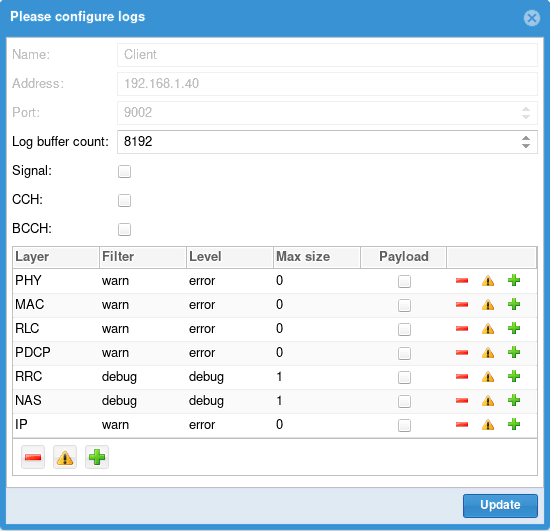For more details about logging configuration, see ltewww.pdf documentation
|
Note : If this page can’t be loaded, please check that lte service is running ( |
You should see now (as shown in the picture below)
UE Scenario & UE Simulator

.
UE Scenario will be used to define scenarii.
UE Simulator aims to control your UE simulator instance.
Once the webGui is up and running, you can create scenarios.
UE Scenario tab.
Add button. A new scenario named "New scenario" appears now in the main panel
New scenario to display the scenario panel on the right side.
CountNumber of UE to create. If set to 0, the scenario shall only be applied to an already created UE.
IMSIIMSI of each UE. The special character $ can be added to differentiate each UE. It will be replaced by the UE index.
NB: Same IMSI can be used for all UEs if EPC can handle it and differentiate UEs based on their IMEI as instance. This is actually supported by Amarisoft EPC when multi_sim parameter is true in user database file (ue-db_ims.cfg).
IMSI can be generated by introducing ${F(i)} inside IMSI digits where F is a Javascript mathematical function
and i the index of UE. The absolute integer rounded result padded with 0 will be put inside IMSI.
Example:
00101${1000 * i + Math.sqrt(i)}
Will produce 001010000001001, 001010000002001, 001010000003001, 001010000004002...
categoryUE category.
Forced RIForce RI returned by UE to base station. 1 for SISO, 2 for MIMO
Forced CQIForce CQI returned by UE to base station. If set to 0, UE will estimate it. It’s recommended to set it at 15 for testing at max throughput in wired condition
K/OP/OPC/Algo :Secret key parameters. To be aligned with IMSI parameters stored in HSS so that the UEs can be authenticated correctly. See lteue.pdf for more details
TypeAllow to select simulation mode between SIM, TUN and Remote
Sim mode: Uplink and downlink traffic flow of each UE is managed by an embedded traffic generator called "lte simserver" running on EPC side. No logical TUN interface is created per UE.
TUN mode: Create a linux TUN interface per PDN for each UE.
This allows to communicate with each UE independently through their network namespaces.
Lte_simserver is not required in that case. Iperf command can be used for generating or receiving IP traffic as instance. See Downlink and Uplink transfer using iperf for more details.
Remote mode: Used with remote UE mode. See Remote UE for more details.
Setup script:Select script used for TUN and Remote mode.
PDN parameters are optional. If the tab remains empty, the UE(s) will attach to the network and request a PDN connectity without specifying the APN. Network will provide the default APN in that case.
To request a PDN with a specific APN and change the PDN type, a new PDN profile has to be created using the following parameters :
NameAccess point name (APN) requested in the PDN connectivity request
TypePDN type. Can be IPv4 only, IPv6 only, IPv4v6 or Ethernet
connectDefine when PDN connectivity request will be triggered. Can be done during the UE attach procedure or on demand, i.e when the simulation will start the transfer on this specific APN.
|
Note : PDN tab only aims to declare and configure the PDN. To trigger a PDN with the specific APN declared, a simulation must be created and refer to this APN. See Simulations tab |
Channel simulation parameters are optional. If the tab remains empty, RX and TX signals respectively received and transmitted by the UE(s) will remained unchanged. No simulation will be applied.
In order to simulate different channel conditions, See Channel simulator for more details
Power on/off parameters are optional. If the tab remains empty, the UE(s) declared in the create UEs tab will be created but won’t be turned ON automatically.
If enabled box is checked, simulation will generate on and off periods for each UE
and run simulations defined in Simulations tab.
DurationDuration of the simulation in seconds. All simulations and power off/on commands will be over before this duration. It can be seen as the maximum simulation duration.
Connection attempts/sNumber of maximum UE connection attempt per second.
Max simultaneous connected UEMaximum number of simultaneously connected UE. Simulation will avoid any power on until this limit is reached, in other words, next power on will occur after new power off.
Power on durationDuration in seconds of power on period. UE will remain powered on during this time and them will power off, allowing a new UE to connect.
Power off durationMinimum duration in seconds of power off period. When powered off, a UE will remain powered off at least this time before being candidate to power on again.
Note: UE simulator will try to put as many simulation as possible within the duration period, depending on parameters.
The simulation tab aims to create different type of IP traffic simulation. You can add several simulations per scenario. Each simulation will be placed inside each power on period of each UE.
Click on "+" button and select simulation type:
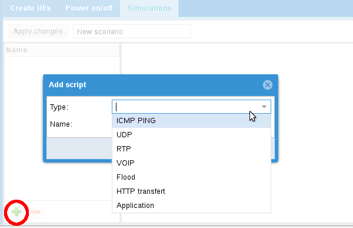You can then choose the following IP traffic:
ICMP PingPerform ICMP Ping request.
UDPSend UDP constant bitrate traffic.
RTPSend RTP constant bitrate traffic.
VOIPSimulate voice RTP traffic using statistical model.
FloodSend UDP packet burst
HTTP transfertSend HTTP requests.
ApplicationLaunches an external application. See External application for more details
Once IP traffic selection has been done , additional parameters can be configured:
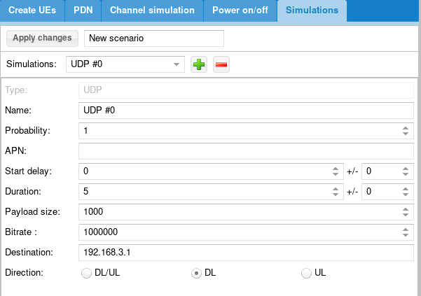NameName of simulation
ProbabilityBetween 0 and 1. When scenario is running, probability that a UE instance runs the simulation depends on probability (1 = 100% probablity, 0 means no chance, 0.5 means one out of two) .
APNAllow to request a specific Access Point Name in the PDN connectivity request. The APN name defined here must be declared previously in the PDN tab. See PDN tab
Start delayScript start delay in seconds. If power off/on procedure is not activated, script starts after this delay. If power on/off procedure is activated, you should always set a delay as power on procedure may take a while unless it is what you want to do.
DurationDuration of the script in seconds.
Payload sizeSize of the IP packet in Bytes
BitrateTraffic Bitrate in bit per second
DestinationDestination address of IP traffic.
In sim mode, ltesim_server peer entity running on EPC must listen to the same IP address ( ./ltesim_server -a 192.168.3.1)
DirectionIP traffic direction. Can be downlink only, Uplink only or both Uplink/downlink
Once all parameters have been configured, click on Apply changes to commit them.
Your scenario will now appear in the center panel and is ready to be used !
Once a scenario has been created, it’s possible to export it.
In the center panel, the Export button generates a json config file that you can directly
integrate in your UE configuration file for running it through command line instead of using the WebGUI.
It also generates a MME config file that can be loaded on Amarisoft EPC to fill automatically the ue_db of MME component.
Once scenario have been created (as described in section above), you can now run them to test your eNodeB and EPC.
In the center panel, select the scenario and click on run button
Once started, two tabs UE simulator and UE simulator:scenarioName can be used to monitor the UE status, visualize chart and trigger manual actions
When selecting simulator UE tab, several panels are displayed.

Panel on top aims to trigger actions:
monitor button: open linux monitor
Refresh button will force refresh of UE list. Else it is done regularly and refresh period is defined by the number field on the right.
Start button will allow you to start predefined scenario. Note that only scenario that create UEs will be proposed.
Stop button will stop any pending simulation on UE simulator.
constellations button: show real time constellations (when signal check box is enabled in logging server configuration)
Panel in the middle lists all UE created and their status.
Right click on any UE to perform more actions:
Panel at the bottom provides various real time charts for debug and tracking purpose
UE scenario tab and call it My first test.Simulations tab and add ICMP ping:Apply changes
UE Simulator tab.
My first test. A new tab is created to follow scenario.
Following buttons are available:
Let’s try the following exercise:
Let’s create a new scenario.
First, we need to estimate the amount of necessary UE.
If we set only 100 UE:
This implies between t=10s and t=20s, total amount of connected UE will decrease to 0 at t=20s. As a result:
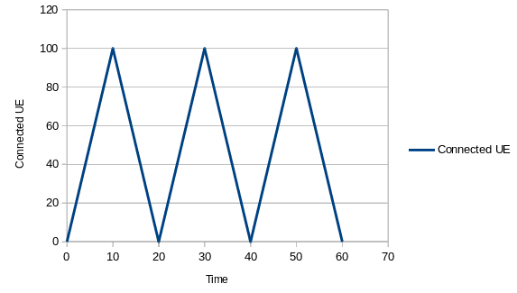So what can we do ?
We can reduce power off duration but this will imply all UE will stay disconnected 0s !
And we can increase the amount of UE to have a constant pool of disconnected UE.
Let’s do this:
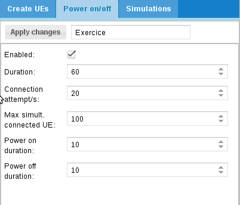Then we can add our scripts:

With this configuration, HTTP transfer will last 6s.
As power on duration is 10s, it means HTTP transfer will start 2s after power on
and will stop 2s before power off.
Take a look at URL: http://192.1.168.4.1:8080/data?size=10000
This URL will be interpreted by ltesim_server embedded HTTP server as a transfer of 10000 byte(s).
Note that ltesim_server must be started with HTTP server enabled:
sudo ./ltesim_server -a 192.168.4.1 -H 8080
Then add ping
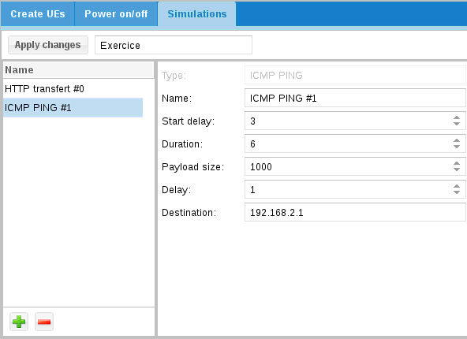And start it
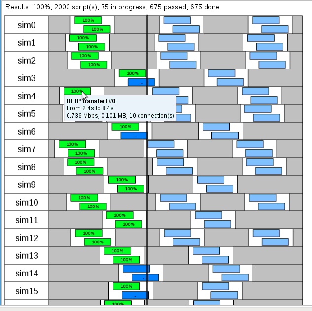In order to ease automation, UE scenario can be directly defined in the ue.cfg file and run automatically when lte service is started.
The exhaustive list of parameters that can be used are described in lteue.pdf documentation, chapter 7.3.
For creating configuration files including scenario, you can start from one of the files provided in the amarisoft releases (available under /root/ue/config folder) as a starting point and modify it as described in the following sections in order to create multiple UE.
Note: as described in "Export scenario" section above, another possibility consists in creating the scenario through the Web GUI and exporting it. The json config file generated can be integrated into the config file.
|
Note : Export button is active only when number of UE created in scenario is not Null |
It’s possible to create multiple UEs by using either the ue_count parameter or by . This is convenient when high number of UEs must be created manually.
When defined, ue_count instances of UE are created. Each of them has a unique IMEI and K values (starting from IMSI and K values and incremented by one) .
All others properties remain the same for each UEs.
|
When using Amarisoft EPC solution, |
In the example below, UE with IMSI 001010000000200 will automatically power on after 3 seconds and power off after 3000 seconds.
ue_list: [
{
as_release: 8,
ue_category: 4,
imsi: "001010000000200",
sim_events: [
{
"start_time": 3,
"event": "power_on"
},
{
"start_time": 3000,
"event": "power_off"
},
]
The example below shows the different steps of a PING scenario for UE with IMSI 001010123456789:
ue_list: [
{
"ue_id": 88,
"imsi": "001010123456789",
"K": "00112233445566778899aabbccddeeff",
"forced_cqi": 15,
"forced_ri": 2,
"sim_events": [
{
"start_time": 0,
"event": "power_on"
},
{
"start_time": 5,
"end_time": 305,
"dst_addr": "192.168.3.1",
"payload_len": 1400,
"delay": 1,
"id": 36457,
"event": "ping"
}
]
}
],
The example below shows the different steps of a UDP UL scenario with 2 UEs:
ue_list: [
{
"ue_id": 1,
"imsi": "001010123456789",
"imeisv": "8682430000000101",
"K": "00112233445566778899aabbccddeeff",
"sim_algo": "xor",
"ue_category": 4,
"pdsch_max_its": 6,
"as_release": 8,
"sim_events": [
{
"start_time": 0,
"event": "power_on"
},
{
"start_time": 5,
"end_time": 305,
"dst_addr": "192.168.3.1",
"payload_len": 1400,
"bit_rate": 15000000,
"type": "udp",
"event": "cbr_send"
}
]
},
{
"ue_id": 2,
"imsi": "001010123456789",
"imeisv": "8682430000000201",
"K": "00112233445566778899aabbccddeeff",
"sim_algo": "xor",
"ue_category": 4,
"pdsch_max_its": 6,
"as_release": 8,
"sim_events": [
{
"start_time": 0,
"event": "power_on"
},
{
"start_time": 10,
"end_time": 310,
"dst_addr": "192.168.3.1",
"payload_len": 1400,
"bit_rate": 15000000,
"type": "udp",
"event": "cbr_send"
}
]
}
],
The example below shows the different steps for sending UDP packets with iperf using a specific APN IMS
ue_list: [
{
as_release: 8,
ue_category: 4,
imsi: "001010000000200",
K: "00112233445566778899aabbccddeeff",
/* Enable it to create a TUN interface for each UE PDN */
tun_setup_script: "ue-ifup",
sim_events: [
{
event: "power_on",
start_time: 5,
},
{
"apn": "ims",
"pdn_type": "ipv4v6",
"start_time": 10,
"event": "pdn_connect"
},
{
"start_time": 15,
"event": "ext_app",
"prog": "ext_app.sh",
"args": ["iperf -c 192.168.4.1 -i 1 -u -b 1M -t 100"],
},
],
}
],
For more details about event type (flood, UDP uplink, UDP downlink, http, others.. ) and parameters please refer to lteue.pdf document, chapter 6.7 IP simulation messages
Once scenario is running, it’s possible to remotely control the UEs and trigger some actions (such as turning off UEs or changing rf gains) either by using the command line monitor or through WebSocket.
For more details about command line and remote API, please refer to lteue.pdf section Remote API and Command line monitor.
Example of remote command :
./ws.js 192.168.1.11:9002 '{"message": "power_on","ue_id":2}'
For running Downlink and Uplink test, iperf can be used on both sides: Core network and LTE UE simulator.
Note that by default network namespace (netns) is required at UE side.
A network namespace is logically another copy of the network stack, with its own routes, firewall rules, and network devices.
In UE config file, when parameter tun_setup_script: "ue-ifup" is present, each UE gets its own (logical) Tun interface created.
You can then use it to select the UE PDN to be used for transmitting and receiving data, as described in the section below
The useful commands are :
ip netns list - show all of the named network namespaces
ip netns exec ueX cmdX - Execute a command within the namespace of a UE.
For sending uplink traffic from multiple UEs with iperf:
tun_setup_script: "ue-ifup", under ue_list (in ue.cfg file), for each UE in order to create a TUN interface for each UE PDN
service lte start), switch to LTE screen (screen -x lte) and power_on UEs (power_on <UE_ID>)
iperf -s -u -i 1
ip netns list to list all network namespaces
[root@localhost ~]# ip netns list ue2 ue1
ip netns exec ue2 iperf -c 192.168.3.1 -u -b 150M -i 1 -t 100
For sending downlink traffic to multiple UE using iperf:
tun_setup_script: "ue-ifup", under ue_list (in ue.cfg file), for each UE in order to create a TUN interface for each UE PDN
service lte start), switch to LTE screen (screen -x lte) and power_on UEs (power_on <UE_ID>)
ue command in LTE screen
(ue) ue # UE_ID CL RNTI RRC_STATE EMM_STATE #ERAB IP_ADDR 0 1 0 51 idle registered 1 192.168.2.2 1 2 0 50 idle registered 1 192.168.2.6
iperf -c 192.168.2.2 -u -b 150M -i 1 -t 100
ip netns list to list all network namespaces
[root@localhost ~]# ip netns list ue2 ue1
ip netns exec ue1 iperf -s -u -i 1
|
Note: any command can be run in the namespace, such as ping, ifconfig, etc..
|
When using standalone NB-IOT cell, only dl_earfcn has to be set in ue.cfg file. The ul_earfcn is automatically deduced
|
Note : If Uplink Downlink spacing doesn’t follow standard values, ul_earfcn must be set as well |
In in-band and guard band modes, RB used for NB-IOT in uplink and downlink are configured by the network. Uplink EARFCN and frequency offset values used are broadcasted via SIB2.
UE SIM can not change dynamically the UL Freq based on SIB2 parameters. It’s then required to set those values (ul_earfcn and ul_carrier_freq_offset) manually in the ue.cfg file
Example of SIB2 message:
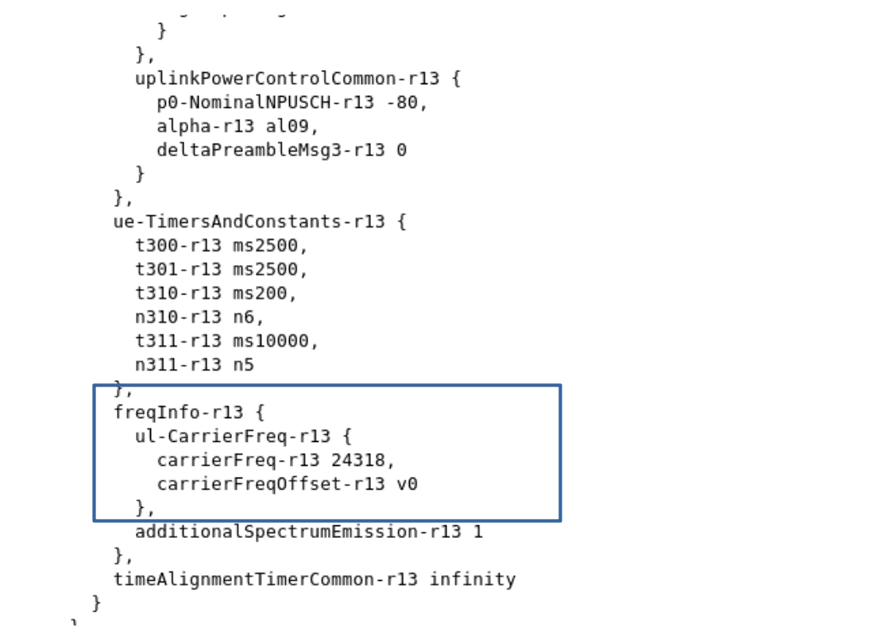|
Note : If Amarisoft eNodeB is used, command |
Example of ue.cfg file:
bandwidth: 1.4,
multi_ue: true,
multi_ue_type: "nbiot",
rel13_5: true,
cells: [
{
dl_earfcn: 6309, /* 806 MHz (Band 20) */
n_antenna_dl: 1, /* number of downlink antennas */
n_antenna_ul: 1,
ul_earfcn: 24318,
ul_carrier_freq_offset: 0,
}
The LTE UE simulator embeds a channel simulator that can be used to alter UE measurements and simulate different radio conditions.
The main parameter to activate the channel simulation is: channel_sim
If set to "true", the UE channel simulator is enabled.
|
Note: Channel simulator is only available in multi UE mode (multi_ue = true). |
On the downlink side, depending on the simulated UE path loss, the channel simulator modifies the PER (Packet Error Rate) of PDSCH and PDCCH and updates the measured RSRP and CQI.
On the uplink side, The signal level is modified accordingly.
The path loss of each UE is computed according to the corresponding UE and cell
positions, channel and antenna models.
When the UE channel simulator is enabled (channel_sim = true), the following additional parameters must be provided (see lteue.pdf file for more details):
Here is an example of cell configuration defined in ue.cfg file:
bandwidth: 20,
multi_ue: true,
channel_sim: true,
cells: [
{
dl_earfcn: 3350, /* 2680 MHz (band 7) */
n_antenna_dl: 2, /* number of downlink antennas */
n_antenna_ul: 1,
global_timing_advance: -1,
/* position (in meters) */
position: [0, 0],
ref_signal_power: 5, /* in dBm */
/* Attenuation between the UE TX and eNodeB RX in dB. In
LTESIM, it is equal to the path loss of the UE group. */
ul_power_attenuation: 108,
antenna: { type: "isotropic" },
}
],
When the UE channel simulator is enabled (channel_sim = true), the following UE parameters must be provided (see lteue.pdf file for more details):
Those parameters can be set manually in the ue.cg file or configured automatically with the WebGui as described below.
Scenario creation through WebGui is the easiest way to simulate noise and mobility. Based on input parameters, WebGui will generate a random scenario and static channel simulation parameters.
However, if you need to get deeper control of UE position, speed and direction or set specific path loss parameters, you can set the initial value of UE list parameters in the ue.cfg file (See example of ue_list cfg file) and use the remote API as described below to move the UE position.
The WebGui (ltewww) provides options to create scenario including channel simulation.
WebGui interface :
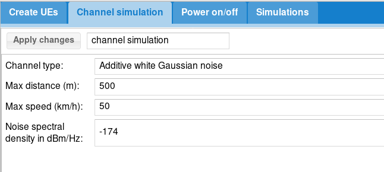To activate channel simulation through WebGui :
Channel type = Additive white Gaussian noise
Min distance: minimum allowed distance from coordinates [0,0] in meters.
Max distance: maximum allowed distance from coordinates [0,0] in meters.
Speed: UE speed in km/h.
Noise spectral density in dBm/Hz : define Noise density (default value is -174).
Note that UE will be randomly placed inside the ring delimited by minimum and maximum distance
Example :
Let’s define the same values as the picture above :
Channel type = Additive white Gaussian noise
Min distance = 0
Max distance = 20
Speed = 5
Noise spectral density in dBm/Hz= -174
This generates the following ue_list parameters :
ue_list: [
{
"ue_id": 1,
"imsi": "001010123456789",
"imeisv": "2780880000000101",
"K": "00112233445566778899aabbccddeeff",
"sim_algo": "xor",
"opc": "000102030405060708090A0B0C0D0E0F",
"ue_category": 4,
"min_distance": 0,
"max_distance": 20,
"noise_spd": -174,
"position": [
5.711861020335772,
3.274739949279177
],
"direction": 42.431151896147014,
"speed": 5,
"channel": {
"type": "awgn"
},
/* If set, will override global parameter: channel_sim */
"channel_sim": true,
"pdsch_max_its": 6,
"as_release": 8,
"sim_events": []
}
]
As a result, with this scenario, UE will move from its initial position (5.71,3.27) following the direction(42.43°) at the speed of 5 km/h. Once UE has reached the max distance (20 meters) or min distance (if set) to origin, it will bounce according to the bounce parameter.

To get deeper control of UE position, speed and direction it’s possible to use the remote API to control the UE position. First of all, ue.cfg file must be filled correctly
See cell configuration parameters
see lteue.pdf for more details about these parameters.
Example of UE configuration file
ue_list: [
{
/* USIM card data */
imsi: "0010112345600",
K: "00112233445566778899aabbccddee00",
count: 10,
/* UE channel simulator parameters */
position: [15, 0], /* starting position (in meters) */
speed: 0, /* speed (km/h) (default = 0) */
direction: 0, /* direction (degrees) (default = 0) */
channel: {
type: "awgn",
},
Once configured, the scenario can be run and UE parameters changed on the fly through the remote API
Move a UE to a specific position . Includes the following parameters :
Example of Websocket command :
./ws.js 192.168.1.11:9002 '{"message": "ue_move","ue_id":1,"position": 10,"speed": 5, ,"direction": 45}'
For logging LTE UE messages through webGui, please refer to ltewww.pdf documentation .
Default LTE UE com addr is 9002
|
Note: ue.log file can be fetched under your PC /tmp folder without using the WebGui |
As described in lteue.pdf command line can be used to display logging information.
t help command provides the list of options available
t spl command provides key information about the UE signals
--TX 1----- --TX 2----- dBFS --RX 1----- --RX 2----- RMS MAX RMS MAX SAT RMS MAX RMS MAX -31.4 -16.7 -32.3 -382.3 0 -40.6 -28.4 -41.3 -29.2 -31.4 -16.7 -32.3 -382.3 0 -40.6 -28.4 -41.3 -29.1 -31.5 -16.7 -32.3 -382.3 0 -40.6 -28.6 -41.3 -28.3 -31.5 -16.7 -32.3 -382.3 0 -40.6 -28.3 -41.3 -28.8 -31.4 -16.7 -32.3 -382.3 0 -40.6 -28.5 -41.3 -28.7
Where, for TX:
tx_gain command can be used to decrease or increase the TX gain at UE side. Initial value is set in rf_driver configuration file.
And for RX:
rx_gain command can be used to decrease or increase the RX gain at UE side. Initial value is set in rf_driver configuration file.
t cpu command provides key informations about the CPU load.
-Proc- ---RX-------- ---TX-------- ---- TX/RX diff (ms) CPU MS/s CPU MS/s CPU min/avg/max sigma 51.8% 23.040 6.6% 23.040 1.6% 2.23/2.8/3.3 0.2 52.9% 23.040 6.6% 23.039 1.6% 1.97/2.8/3.3 0.2 52.3% 23.040 6.6% 23.041 1.5% 2.20/2.8/3.3 0.2 51.4% 23.040 6.6% 23.040 1.6% 2.20/2.8/3.3 0.2 50.8% 23.040 6.6% 23.039 1.6% 2.19/2.8/3.3 0.2
t cpu shows CPU consumption for the main LTE task (Proc), the reception chain (RX) or transmission chain (TX). Units are MS/s (Million of sample per second)
On top of that, t cpu command provides informations on TX-RX delay:
The min, average and max values are given in miliseconds.
To make it simple, in LTE FDD mode as instance, UE is granted in Uplink 4 TTI (4 ms) before data have to be sent.
UE has by consequence 4ms to generate the UL samples. The RX/TX delay is the remaining time before data are processed and time they must be sent in UL.
If this value decreases to zero, this means that PC is too slow and physical layer is running out of CPU to process the data within this period. The higher is the TX/RX value is , the better it is.
t command (without argument) provides key informations about the Uplink and downlink transfer
----------------------Hz---ppm----dB----dBm-------------------------DL---------- ---------------------UL-
UE_ID RAT CL RNTI CFO SRO SINR RSRP mcs retx rxfail txok brate #its mcs ta retx tx brate
1 LTE 00 003d -898 -3.5 32.1 -44.0 27.8 0 0 6192 209M 1/3.9/6 20.0 0 0 50 21.3k
1 LTE 00 003d -900 -3.5 32.1 -44.0 27.8 0 0 6208 210M 1/3.9/6 20.0 0 0 50 21.0k
1 LTE 00 003d -900 -3.5 32.1 -44.0 27.8 0 0 6192 209M 1/3.9/6 20.0 0 0 50 21.0k
1 LTE 00 003d -901 -3.5 32.1 -44.0 27.7 14 4 6204 208M 1/3.9/6 21.0 0 0 64 292k
Where :
Information about the logging tool are provided in ltewww.pdf document. It describes how to setup the web interface and apply filter to get logs displayed.
When using tunnel interface with external program, you may want external program to be run on a different PC. The Remote UE tool allows you to transfer IP traffic from each UE to a remote entity.
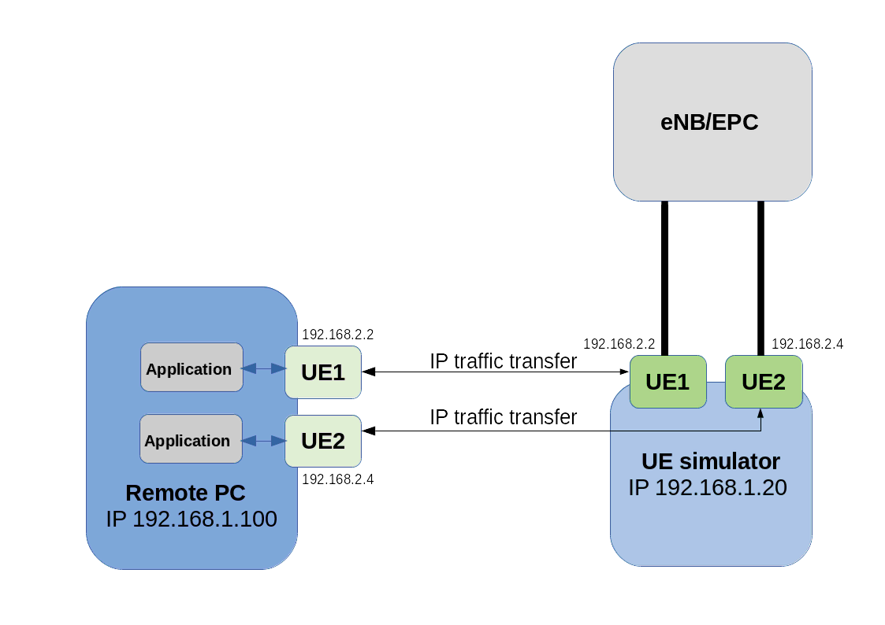On the remote PC :
lterue config/rue.cfg command
Note : You donât need any specific license. lterue uses GTP over SCTP to communicate with LTEUE.
On the UE simulator PC:
rue_bind_addr parameter to the IP address of UE sim PC (example 192.168.1.20 here)
lteue config/ue.cfg command|
Setup is now configured and ready for running scenario either manually or with Webgui |
When using WebGui:
Create UEs tab set type = Remote
setup script value = ue-ifup
Remote address value = IP address of remote PC ( example 192.168.1.100 here)
.
When scenario is run manually:
In ue.cfg file, add for each UE, under ue_list:
tun_setup_script: "ue-ifup"
rue_addr: "192.168.1.100", where 192.168.1.100 is the remote PC IP address
.
Now, If you go back to remote PC:
ue command
ip netns list command. You should see the networks namespace created for each UE .See Linux Network Namespaces for more details
ip netns ueX commandX.
Example: ip netns exec ue1 ping 192.168.3.1
You can replace predefined simulation by a custom application. For this, choose Application in IP simulation list.
When started, the external application will fork a process and return its standard output and error.
To handle dedicated application, please take a look at libsim_custom.js
file in LTEWWW component.
You can add specific result handler using tag for association.
Note that it requires associated UE to be configured in tunnel mode or with remote UE mode and thus IP simulations can’t be mixed.
External SIM card can be used using PCSC-Lite lib, which is supported on Amarisoft LTE UE simulator
To do so :
ue_list, set external_sim: true
sim_reader_index. This is optional.
When running LTE UE simulator, before creating any UE or starting scenario, the first output that should be displayed on the shell is "(ue) Cell 0: SIB found". This means that LTE UE simulator has detected the eNodeB and can read the SIB. This is a prerequisite before running any tests.
If this message is not displayed, here is a check list that can help to find the root cause:
rx_gain value. Should be around 60dB in wireless connection or 0dB in wired connection
t spl command. See t spl command for more details.
If all checks above haven’t been enough to figure out why eNodeB signal is not detected, you can also use the spectrum analyzer function embedded in the UE simulator to verify the LTE signal quality received in downlink. See trx_sdr.pdf documentation for more details.
When multiple UE mode is enabled, UE simulator may have difficulties to synchronize with eNodeB signal.
If such a case occurs, you should see that UE is able to receive SIBs but further communications fails with bad CRC on physical layer.
This means that you should adjust the parameter global_timing_advance in your configuration file.
The global_timing_advance parameter can be set automatically by using the special value -1 (global_timing_advance:-1). If automatic mode is set, the UE simulator uses the timing advance from the first received RAR for all UEs. This is the default behavior.
You can also manually adjust the timing advance for all UEs in case you still experience CRC erros with automatic mode. You can check TA value on eNodeB side and
set it to minus 1 in UE
(global_timing_ advance = TA[enb] - 1). if you are using simulator with Amarisoft eNodeB, you can type t at eNodeB screen and look at PRACH traces.
Then, use ta value minus one as global_timing_advance.
PRACH: cell=01 seq=17 ta=2 snr=18.5 dB PRACH: cell=01 seq=22 ta=2 snr=18.0 dB PRACH: cell=01 seq=23 ta=2 snr=18.5 dB PRACH: cell=01 seq=29 ta=3 snr=17.6 dB
In this example, adjust global_timing_advance to 1.
If you are using another eNodeB and you do not have access to eNodeB logs and information, you can enable the PHY and MAC layer logs in UE simulator and look for ta value in MAC traces
12:13:37.086 [MAC] - 0001 ta=13 ul_grant=128768 c_rnti=0x0047
In this example, you should set the global_timing_advance to 12.
If peak throughput is not achieved in Downlink, a first investigation can be done at physical layer using the webGui.
In the main panel, click on analytics button. A new window will pop up.
Note : physical layer trace level must be set to debug prior to the testing.
In this new window, several statistics are displayed and provide useful information about UE performance
ThroughputDisplays Downlink and Uplink throughput at physical layer
CQICQI values reported by the UE to the eNodeB. A low CQI value means that Downlink channel quality is low and results in low throughput in downlink as eNodeB will use small MCS
Rank indicatorRank Indicator values reported by UE to the eNodeB.
A RI of 0 means that UE is not able to receive data in MIMO mode (TM3) and results in lower throughput .
This can be caused by a low SNR, or a high correlation between two antenna stream or simply because the n_antenna_dl parameter as been set to 1 in the ue.cfg file
TPCTPC (Transmit power control) average values received by the eNodeB. Note: When channel simulation is disabled, TPC command are not taken into account by the UE. The transmit power is set in the configuration file
RX/TX packetsDisplay number of packet received and sent with good and bad CRC (cyclic redundancy check)
This graphic give a good overview of the downlink/uplink performance.
In perfect radio conditions, no packet with bad CRC should be received by UE or eNodeB.
Having a high number of bad CRC indicates that RF path is not optimal or that UE is running out of CPU.
t cpu command provides CPU indication at UE side.
When running NB-IOT test, the RRC state may report "Locking" value . This is visible when typing "ue" command in LTE UE screen.
This state means that LTE UE has not been able to synchronize on eNodeB side. This is likely due to wrong EARFCN or RX signal level
If your browser fails to load the webGui page (xx.xx.xx.xx/lte), check that :
If the main page can be loaded but connection to server fails, check that
TRX discontinuity too wide means that frames number on cell 1 and 2 are misaligned . This may have several root causes.